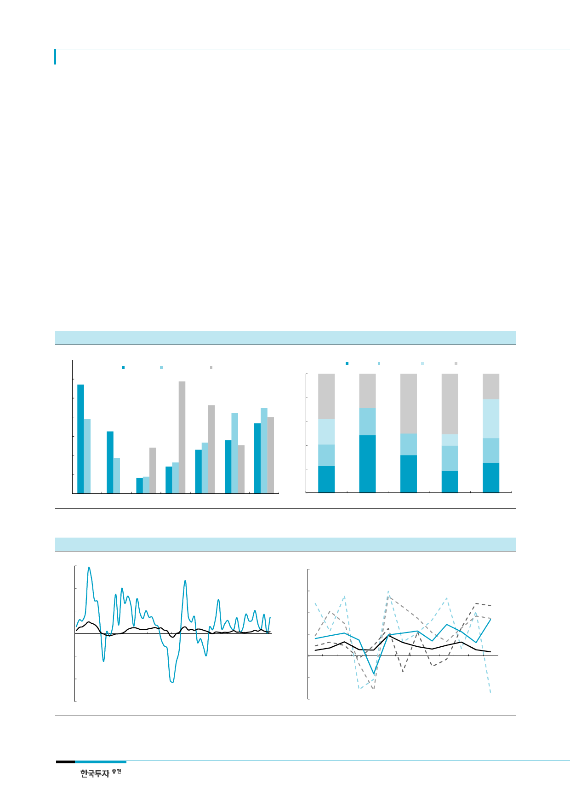

대한항공(003490)
휴가일수 길어질수록
해외여행 더 자주 멀리 간다
우리나라의 ‘시간빈곤’ 문제를 감안하면 국제선 여객수요는 앞으로도 증가할 여지가 높다.
우리나라 근로시간은 OECD 가입국가 중 멕시코 다음으로 가장 많다. 반면 글로벌 온라인
여행사인 익스피디아의 설문조사에 따르면 우리나라의 휴가일수(8일)는 주요 28개국가 평
균(20일)의 절반에 못 미치는 것으로 나타났다. 우리나라 근로자에게 주어진 연차휴가는
연 15일이나 실제 사용일수는 60%에 못 미치는 실정이다. 하지만 여가에 대해 높아진 눈
높이와 새정부의 ‘국민 휴식권’ 보장 정책에 따라 점차 휴가일수가 늘어날 것이다. 문재인
정부는 근로시간 단축과 대체공휴일 확대, 휴가사용 촉진을 위한 정책을 펼칠 방침이다.
이에 따라 해외여행 수요가 더 활발해 지며 특히 장거리노선의 수혜가 예상된다.
경쟁을 이기는 장거리노선
17F 국제선 여객매출
+4.7% YoY
앞으로 대한항공 이익에서 장거리노선 기여도는 점차 확대될 것이다. 여객매출의 45%는
저비용 항공사가 진출하기 어려운 미주와 유럽노선에서 발생해, 근거리노선 경쟁심화에
대한 부담이 상대적으로 덜하다. 장거리노선은 성장성이 낮으나 수요증가가 꾸준해 이익
의 안정성이 높다. 근거리노선에 비해 충동적 소비심리가 제한적이고 환승수요가 변동성
을 낮추기 때문이다. 특히 대한항공의 미주와 유럽노선 점유율은 각각 48.5%와 31.6%에
달한다. 장거리노선은 공급경쟁이 상대적으로 덜하고 거리가 먼 만큼 서비스가 중요해 운
임상승에 대한 수요의 저항감이 낮다. 따라서 수익성 중심의 전략이 가능할 것이다.
[그림 3] LCC 경쟁 없는 장거리노선 비중 45%
(%)
35
30 28.6
2016년 노선별 여객매출 비중
대한항공
아시아나항공
제주항공
[그림 4] 미주 M/S 48%, 유럽 32%로 경쟁력 우위 부각
(%)
100
2016년 우리나라 노선별 여객 점유율
대한항공 아시아나항공 국내 LCC 외항사
25
80
20
16.3
15
10
5
0
미주
유럽
대양주 국내선
일본
중국
동남아
60
40
20
23
0
국제선
48
미주
32
유럽
19
중국
자료: 각사, 한국투자증권
자료: 한국공항공사, 인천국제공항공사, 한국투자증권
25
일본
[그림 5] 해외여행 확대로 우리나라 국외소비 갈수록 커지는 추세
(% YoY)
60
40
국외소비 증가율
20
0
국내소비 증가율
(20)
[그림 6] 변동성 높은 근거리(점선) vs. 여객증가 꾸준한 장거리노선(실선)
(%)
40
우리나라 노선별 국제선여객 증가율
30
동남아
20
일본
유럽
10
0
미국
(40)
(10)
(60)
1Q01 1Q03 1Q05 1Q07 1Q09 1Q11 1Q13 1Q15 1Q17
중국
(20)
05 06 07 08 09 10 11 12 13 14 15 16 17F
주: 실질 가계 최종소비지출 기준
자료: 한국은행, 한국투자증권
주: 17F 수치는 4월까지 누적 여객수 기준
자료: 한국공항공사, 인천국제공항공사, 한국투자증권
4